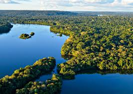

Destinos Sustentáveis

Ilhas Galápagos, Equador
As Ilhas Galápagos são um dos maiores exemplos de preservação ambiental no mundo. Com uma biodiversidade única, o turismo é cuidadosamente regulamentado para evitar impactos negativos no ecossistema.
- Práticas Sustentáveis: Turismo controlado, preservação da fauna local.
- Dicas de Viagem: Use transporte ecológico e respeite as áreas protegidas.

Amazônia, Brasil
A Amazônia é um dos maiores ecossistemas do planeta e está sendo preservada por várias iniciativas de turismo sustentável, como o ecoturismo e o turismo de base comunitária.
- Práticas Sustentáveis: Apoio a comunidades locais e preservação das florestas.
- Dicas de Viagem: Escolha operadores locais que priorizem a conservação e ajude a apoiar as comunidades nativas.
Bhutan
O Reino de Bhutan é um dos países mais ecológicos do mundo. Com políticas de turismo sustentável que limitam o número de visitantes e priorizam a preservação cultural e ambiental, Bhutan é um exemplo de como o turismo pode coexistir com a sustentabilidade.
- Práticas Sustentáveis: Turismo de baixo impacto, conservação cultural e ambiental.
- Dicas de Viagem: Planeje sua visita com antecedência e respeite as tradições locais.